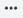
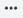
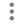

Portal Reports#
This article is about the Portal's Reports section.
Section overview#
The Reports section contains interactive documents which visualise performances of one or several projects. See the section view is in the figure below.
Reports consists of two tabs:
- REPORTS
- SHARED REPORTS
The first tab contains reports that you have created. The second tab contains reports that other Portal users have shared with you.
You can create reports and folders by clicking correspondent buttons in the upper right corner  , of the REPORTS tab. If you want to rename or remove a report, click the options button  on the right. Also, you can delete multiple items. Click checkboxes to the left of each item you need to remove or select all by clicking the box on top.
, of the REPORTS tab. If you want to rename or remove a report, click the options button  on the right. Also, you can delete multiple items. Click checkboxes to the left of each item you need to remove or select all by clicking the box on top.
Creating a report#
After clicking the button, you get to the report editor menu where you have to set its name and content.
The Report name setting is obligatory. It cannot stay empty. Otherwise, you would not be able to save the changes. You can put short text into the Description field.
You can organise tags and projects into groups. There is a default group when entering the report editor menu. You can add and remove objects to the group by clickin the Add project button.
Groups#
Click the button Options  to see available actions:
- Create new group
- Edit group
- Duplicate group
- Delete group
Whenever you choose Create new group or Edit group options, you get to the Group settings menu. The difference is that the first case you set parameters for a new group. And in the second, you change the existing group.
In the Group settings menu, you can set the name of the group, write a description which will appear in the chart view, and choose between line and bar chart types.
Adding tags#
There are two ways of adding tags to the group:
- From a page
- From the list.
To add tags from a page, click Select tags from page, choose the needed page in the menu, and pick tags from the page image.
To add tags from the list, click the Select tags from list button . There will appear the list of tags from all the projects that have been added to the group.
You can search tags in the Filter field.
Report views#
There are three available ways of report displaying:
- Groups
Groups and tags which have been picked to a report. - Chart
Visual presentation of tag values. - Table
Table presentation of tag values.
Sharing and subscribing for reports#
You can share reports with other Portal users and external readers. Click Share  to open the menu.
to open the menu.
The Share Report menu consists of two tabs:
- USERS
- LINK
The first tab allows specifying emails of Portal users that can have access to the report. You can grant a user the READ access mode and the WRITE access mode.
The READ mode allows only reading of the report. Users with the WRITE credentials can edit, rename, and delete the report as if they created it.
Important
Users with whom you want to share a report should have at least the Viewer role in projects included in the report.
You can see an example of the USERS tab in the figure below.
It is possible to share a link for a report by clicking the Share Report button. You can share links to the report with an external information consumer that has not been registered as ControlMachines™ HMI user. In the Share Report menu, you can set the following parameters:
- Include project names
Set whether to display project names in a shared report - The active period of the link is
Choose the period for a link to be active. Possible options are 1 day, 1 week, 1 month, 3 months, 1 year, forever
See the Share Report menu in the following figure.
You can manage the links you shared in your user profile. Go VIEW PROFILE >> SHARED REPORT LINKS to see active links.
Click the Subscribe button to set report subscription parameters. To edit the subscription parameters or delete the subscription, go VIEW PROFILE >> SUBSCRIPTIONS.
Parent article:
- ControlMachines™ HMI Portal
This article contains general information about ControlMachines™ HMI Portal, its features, and interface.